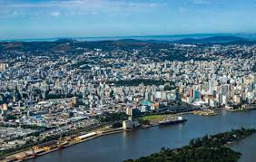

O Rio Grande do Sul é o estado mais ao sul do Brasil, com capital em Porto Alegre. Tem forte influência cultural europeia e gaúcha, sendo conhecido pelo chimarrão, churrasco e festas tradicionais. A economia é baseada na agricultura, pecuária e indústria. O clima é subtropical. Em 2024, sofreu graves enchentes que afetaram milhões de pessoas.
